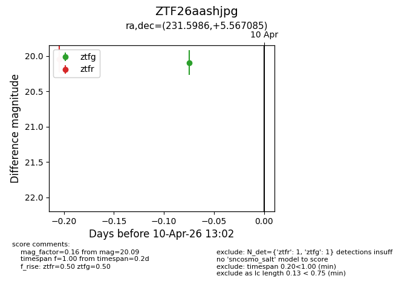
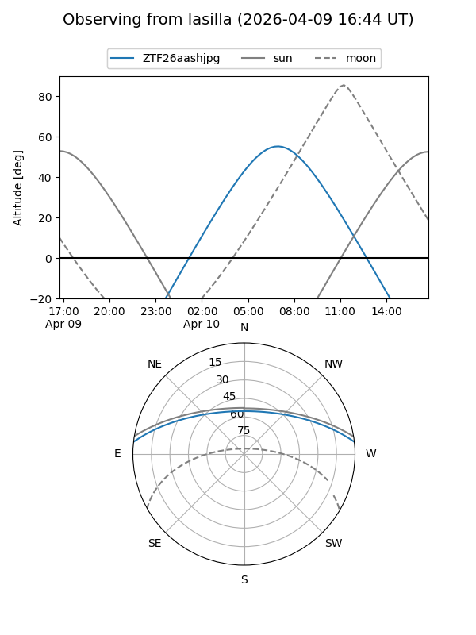
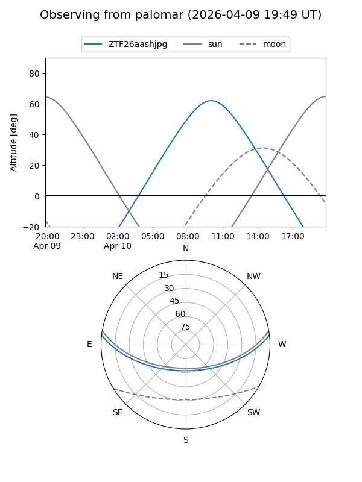

ZTF26aashjpg
Target ZTF26aashjpg at 2026-04-10 13:13
Aliases and brokers:
FINK: link
Lasair: link
ALeRCE: link
alt names
ZTF26aashjpg (ztf,fink_ztf)
Coordinates:
equatorial (ra, dec) = 231.5986,+5.56709
equatorial (HMS+DMS) = 15:26:23.67,+05:34:01.51
galactic (l, b) = (9.6768,+47.32029)
Flags:
Photometry:
last ztfg=20.09, ztfr=20.05
1 ztfg, 1 ztfr detections
Lightcurve

Visibility


Additional plots